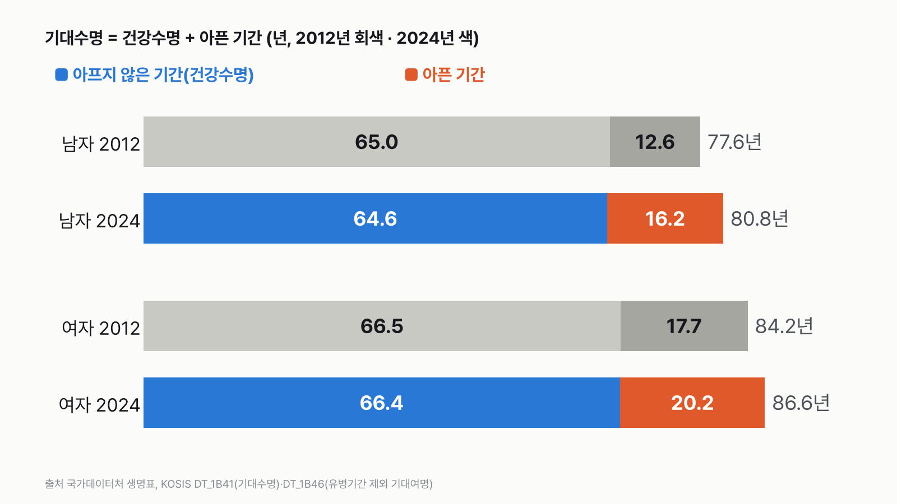

한국 남자, 80.8년 중 몇 년을 아프며 살까
12년 동안 늘어난 수명만큼 아프지 않은 시간이 늘지는 않았어요. 남자 건강수명은 2012년 65.0년, 2024년 64.6년으로 거의 그대로예요. 늘어난 햇수는 아픈 기간 쪽에 붙었어요.

3줄 요약
- 2024년에 태어난 남자는 80.8년을 살고, 그중 64.6년을 아프지 않고 살 것으로 계산돼요. 아픈 기간은 16.2년이에요.
- 여자는 86.6년 중 66.4년을 아프지 않고 살아요. 아픈 기간은 20.2년으로 남자보다 4년 길어요.
- 남자의 아픈 기간은 2012년 12.6년에서 2024년 16.2년으로 늘었어요. 그사이 기대수명은 3.2년 늘었고, 건강수명은 0.4년 줄었어요.
| 기대수명 | 건강수명 | 아픈 기간 | |
|---|---|---|---|
| 남자 2012년 | 77.6년 | 65.0년 | 12.6년 |
| 남자 2024년 | 80.8년 | 64.6년 | 16.2년 |
| 여자 2012년 | 84.2년 | 66.5년 | 17.7년 |
| 여자 2024년 | 86.6년 | 66.4년 | 20.2년 |
| 전체 2024년 | 83.7년 | 65.5년 | 18.2년 |
남자: 5년 중 1년은 아픈 기간
2024년 남자의 기대수명은 80.8년이에요. 그중 건강수명은 64.6년으로 80.0%예요.
나머지 16.2년이 아픈 기간이에요. 사는 동안 5년 중 1년은 아픈 상태로 지낸다는 계산이에요.
여자: 더 오래 살고, 더 오래 아파요
여자는 남자보다 5.8년 더 살아요(86.6년). 그런데 건강수명 차이는 1.8년뿐이에요(66.4년).
그래서 아픈 기간은 여자가 20.2년으로 남자(16.2년)보다 4년 길어요. 기대수명 중 아픈 기간 비율도 여자 23.3%, 남자 20.0%예요.
12년 동안: 수명은 늘고, 건강수명은 그대로
2012년과 2024년을 견주면 남자 기대수명은 77.6년에서 80.8년으로 3.2년 늘었어요. 건강수명은 65.0년에서 64.6년으로 0.4년 줄었어요.
여자도 같은 방향이에요. 기대수명은 2.4년 늘고, 건강수명은 66.5년에서 66.4년으로 거의 같아요.
해마다 같은 방향은 아니었어요
남자 아픈 기간은 2018년 15.7년까지 늘다가 2020년 14.9년, 2022년 14.8년으로 짧아졌어요. 2024년 16.2년은 2012년 이후 가장 길어요.
여자는 2018년 20.8년이 가장 길었고, 2024년은 20.2년이에요.
숫자를 다시 보며
기대수명은 '지금 태어난 아이가 지금의 사망률대로 산다면'을 전제로 한 계산이에요. 한 사람의 앞날을 맞히는 숫자가 아니에요. 아픈 기간이 왜 늘었는지는 이 표로 알 수 없어요. 여러분은 '아프지 않은 64.6년'과 '전체 80.8년' 가운데 어느 숫자가 더 와닿나요?
이 숫자는 어디서 왔나요
출처
기준일 2024년 생명표(2025년 12월 공표)까지예요. 2026년 11월 16일에 받았어요.
| 데이터 | 출처 | 쓰임 |
|---|---|---|
| 기대수명 | 국가데이터처 「생명표」, KOSIS DT_1B41 | 남녀 0세 기대여명 |
| 건강수명 | 국가데이터처 「생명표」 건강수준별 기대여명, KOSIS DT_1B46 | 남녀 유병기간 제외 기대여명 |
어떻게 셌나요
- 기대수명: 0세 기대여명이에요. KOSIS 생명표 DT_1B41.
- 건강수명: 유병기간 제외 기대여명이에요. 질병이나 사고로 아픈 기간을 뺀 기대여명이에요. KOSIS DT_1B46.
- 아픈 기간: 기대수명 − 건강수명.
- 비율: 건강수명 ÷ 기대수명. 아픈 기간 비율은 100%에서 뺀 값이에요.
- 건강수명은 2년마다(짝수 해) 나와요. 그래서 2012·2014·…·2024년 일곱 해만 견줬어요.
한계 4가지
이 데이터로 말할 수 없는 것
- 건강수명의 '아픈 기간'은 건강보험 진료 기록을 바탕으로 계산해요. 설문으로 묻는 '스스로 건강하다고 느끼는 기간'과는 달라요.
- 진료 기록 기준이라, 몸 상태가 같아도 병원 이용이 바뀌면 값이 달라질 수 있어요. 그래서 늘고 준 이유를 말하지 않아요.
- 기대수명은 한 해의 사망률로 만든 가상의 숫자예요. 실제로 그해 태어난 사람이 몇 년을 살지와는 달라요.
- 아픈 정도(가벼운 병인지 큰 병인지)는 나누지 않아요.
새 글 나오면 받아 보기
피드 리더 앱에 이 사이트 주소를 한 번 넣어 두면, 새 글이 올라올 때 앱에 떠요. 가입이나 메일 주소는 필요 없어요.
받는 법 보기
- 피드 리더 앱을 하나 골라요. 새 글을 모아 보여 주는 앱이에요. 예를 들면 Feedly나 Inoreader가 있어요. 둘 다 무료고 웹·휴대폰에서 써요.
- 앱에서 '구독 추가'(+)를 누르고 아래 주소를 붙여 넣어요.
- 끝이에요. 새 글이 올라오면 앱 목록에 떠요.
https://protofu.github.io/opendata-insight/feed.xmlFeedly를 쓴다면 여기를 눌러 바로 추가할 수도 있어요.